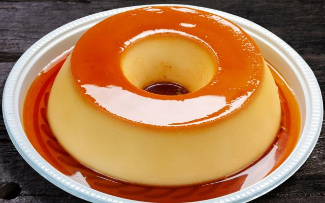

Pudim de Leite Condensado

Veja como fazer essa receita de pudim de leite condensado lisinho e com uma calda perfeita de caramelo. Ele é delicioso, barato e bem rápido de preparar! Com sua textura macia e sabor inconfundível, esse doce é uma verdadeira tentação para os amantes de sobremesas tradicionais.
Ingredientes (8 porções)
Pudim
- 1 lata de leite condensado.
- 1 lata de leite (medida de leite condensado).
- 3 ovos.
Calda
- 1 xícara (chá) de açucar.
- 1/2 xícara de água.
Materiais
- Forma de pudim.
- Liquidificador.
- Panela.
- Espátula de Silicone.
- Prato de Sobremesa.
Modo de preparo (45 min)
- Primeiro, bata bem os ovos no liquidificador.
- Acrescente o leite condensado e o leite, e bata novamente.
- Derreta o açúcar na panela até ficar moreno, acrescente a água e deixe engrossar.
- Coloque em uma forma redonda e despeje a massa do pudim por cima.
- Asse em forno médio por 45 minutos, com a assadeira redonda dentro de uma maior com água.
- Espete um garfo para ver se está bem assado.
- Deixe esfriar e desenforme.